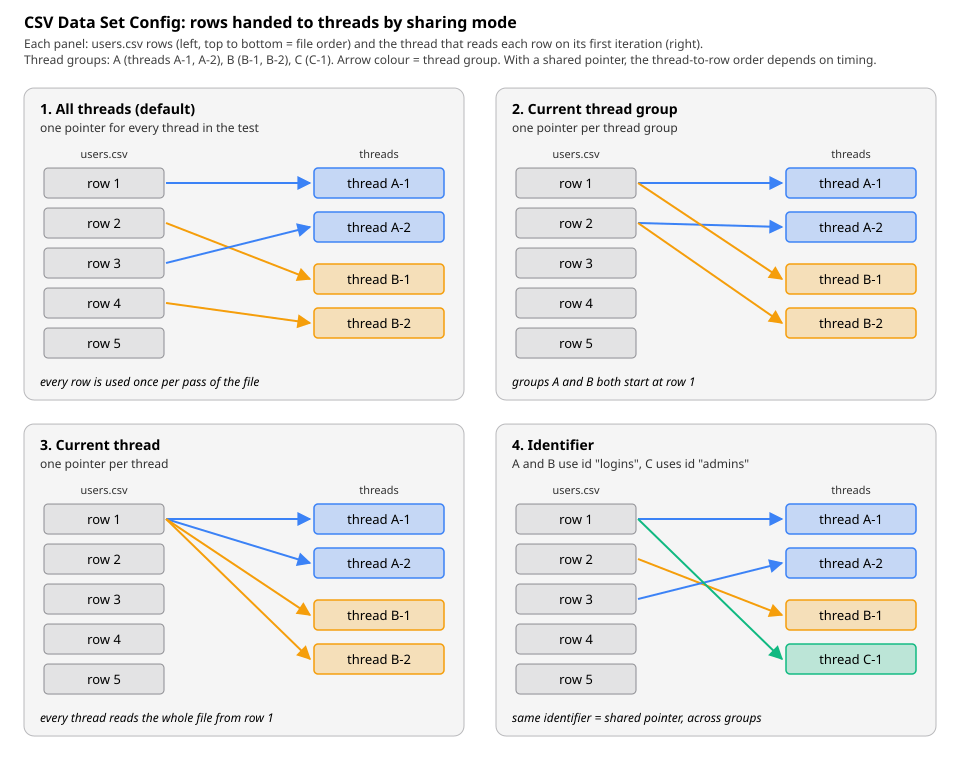

Parameterization & Test Data
|
This content was generated with the assistance of AI and should be verified against the official documentation before being relied on in production. |
This page was written against Apache JMeter 5.6.3 (the latest release on 2026-10-14; it runs on Java 8 and later, and
Java 17 or later is recommended), with Java 17 or later (21 recommended) as the runtime used by the examples. JMeter
6.0 is not released: the changes planned for it are listed in xdocs/changes.xml on the master branch, need Java 17 or
later (21 recommended), and none of them touches the test-data elements on this page, so everything below is expected to
carry over; the planned move to Groovy 5 only matters for the JSR223 examples. The Groovy examples use the Groovy engine
bundled with 5.6.3. Plugins Manager 2.0, jmeter-maven-plugin 3.8.x and the gRPC Request plugin 2.0.x are not needed
here. The field names, defaults and behaviour come from the official component reference, functions reference,
properties reference and change log; where the documentation is silent and the 5.6.3 source code was used instead, the
text says so. The books on JMeter (2.11 to 3.0) are used for the methodology of test data only.
A load test that sends the same request again and again measures a system that does not exist in production. The
Bookshelf plan built in this section therefore takes its users from users.csv and its search terms from
search-terms.csv, and adds generated values (counters, random ids) where a file would be overkill. This page explains
why that matters, every option JMeter offers for feeding data into a plan, how much each one costs on the load
generator, and how to keep the data sound between runs and across several load generators.
Why hard-coded data skews results
Recording a journey gives a plan with literal values: one username, one password, one search term, one book id. Run that with 50 threads and the server sees 50 copies of one user doing one thing. The measured response times are then wrong in predictable directions:
| Effect | What happens with one repeated value | Direction of the error |
|---|---|---|
Caching |
The first |
Too optimistic |
Locks and contention |
50 threads that create a loan on the same book, or update the same user row, queue on the same row lock or optimistic version. Production users rarely collide like that. |
Too pessimistic |
Uniqueness and business rules |
A second |
Wrong, often hidden |
Sessions and server state |
One account logged in 50 times may hit a per-user session limit, a rate limit or a token-revocation rule, or share a per-user cache entry. |
Either direction |
Data distribution |
Real users search popular and rare terms, open short and long books, and own few or many loans. One value exercises one execution path and one index range. |
Unrepresentative |
The Pro Apache JMeter book (Pro ch. 11) makes test data part of the workload model, next to the use-case mix and the think times: the volume and variety of the data in the database and in the requests must resemble production for the results to transfer. The JMeter manual gives the same advice from the other side. Its best-practices chapter suggests using one sampler in a loop fed by variables from a CSV Data Set, rather than many similar samplers, and preparing large or randomised data in a file before the test instead of generating it at run time.
Source: Best Practices (User Manual)
The Bookshelf data files
The Bookshelf plan keeps its data next to the test plan, under version control, in a data/ folder:
bookshelf-perf/
├── bookshelf-load.jmx
└── data/
├── users.csv one test account per line (placeholder credentials)
└── search-terms.csv one search term per line, popular terms repeatedusers.csv has a header line and one test account per line. The accounts must exist in the test environment (they
are seeded through the API or the database before the run, as described under Test-data hygiene). The values are
placeholders that only exist in a disposable test database; never put real credentials in a data file.
username,password
reader0001,change-me-0001
reader0002,change-me-0002
reader0003,change-me-0003
...
reader0500,change-me-0500search-terms.csv has a single column. Popular terms appear several times so that the mix of cache hits and misses is
closer to the real one, and some values contain a comma, which is why they are quoted:
term
tolkien
tolkien
distributed systems
"le guin, ursula"
"pratchett, terry"
kotlin
kotlin
kotlin
history of rome
"""clean code"""The last line is the quoted form of the text "clean code", including its double quotes, as explained under the
Allow quoted data? field below.
CSV Data Set Config
What it is and where it sits
The CSV Data Set Config is a configuration element that reads one line of a file and splits it into variables. The
component reference describes it as easier to use than the __CSVRead() and __StringFromFile() functions and
well suited to large numbers of variables and to "random" and unique values. It is the default answer to "where does
this value come from?" in a JMeter plan.
Add it with Add → Config Element → CSV Data Set Config, normally as a direct child of the Thread Group (or of the Test Plan when several Thread Groups share it). Three facts from the component reference drive everything else:
-
Lines are read at the start of each test iteration. The variables are therefore stable for the whole iteration: every sampler of the Bookshelf journey sees the same
${username}. -
The file name and the sharing mode are resolved in the first iteration, so they can contain variables and functions such as
${__threadNum}or${__P(node,0)}, but changing them later has no effect. -
Variables are defined after configuration processing. Elements that read their settings once at configuration time, such as the JDBC Connection Configuration, cannot use CSV variables. Elements that read their values at run time, such as the HTTP Authorization Manager, can.
Which "iteration" counts depends on where the element is placed. In the 5.6.3 source (TestCompiler), an element that
listens to iterations, such as the CSV Data Set Config, the Counter or the Random Variable, is attached to the nearest
enclosing controller. Directly under a Thread Group it advances once per Thread Group iteration; under a Loop Controller
it advances once per pass of that loop. The Bookshelf search loop relies on this: a CSV Data Set Config for
search-terms.csv placed inside the three-pass Loop Controller gives three different terms per visit (see
Logic Controllers & Transactions).
As a configuration element it is processed before pre-processors, timers and the sampler of its scope (execution order and scoping are on Test Plan Elements, Execution Order & Scoping). The variables it sets are ordinary thread variables (see Properties, Variables & Functions), so an extractor or a script can overwrite them later in the same iteration.
Every field
| Field (GUI) | Meaning | JMX property | Default | Required |
|---|---|---|---|---|
Name |
Descriptive name shown in the tree. Naming it after the file ( |
|
CSV Data Set Config |
No |
Filename |
File to read. A relative name is resolved against the directory of the active test plan (the |
|
empty |
Yes |
File Encoding |
Character set used to read the file. Empty means the platform default of the JVM. The drop-down offers the values of
the |
|
empty |
No |
Variable Names |
Names of the variables, in column order. Leave it empty to read the first line of the file as the list of names (a
header line). The component reference says the names are separated by the delimiter and may be quoted; the GUI label
reads Variable Names (comma-delimited), and the 5.6.3 source splits a typed list on commas, so use commas here even
when the file uses another delimiter. Since 3.1 names are trimmed, so |
|
empty |
No |
Ignore first line (only used if Variable Names is not empty) |
Skip the first line of the file. Use it when the file has a header line but the names are typed in Variable Names anyway, for example to rename the columns. With Variable Names empty the first line is always the header and this option does nothing. |
|
false |
No |
Delimiter (use '\t' for tab) |
Character that separates the values. The two characters |
|
|
Yes |
Allow quoted data? |
When enabled, a value may be enclosed in double quotes so that it can contain the delimiter, and the quotes are removed. A double quote inside a quoted value is written as two double quotes. Quoted values may also contain line breaks. When disabled, quotes are ordinary characters. |
|
false |
Yes |
Recycle on EOF ? |
On reaching the end of the file, start again from the first data line. |
|
true |
Yes |
Stop thread on EOF ? |
On reaching the end of the file with Recycle off, stop the thread. Has no effect while Recycle is on. |
|
false |
Yes |
Sharing mode |
Which threads share one read position in the file: All threads, Current thread group, Current thread, or any other text, which acts as an identifier. See Sharing modes. |
|
|
Yes |
Two JMeter properties complete the element:
| Property | Meaning | Default |
|---|---|---|
|
Value given to every variable at the end of the file when neither recycling nor stopping is enabled. |
|
|
List of encodings offered in the File Encoding drop-down, separated by |
|
File paths: relative to the plan
Relative file names are resolved against the folder of the test plan that is being run, not against the folder JMeter
was started from. A plan saved as bookshelf-perf/bookshelf-load.jmx with Filename data/users.csv therefore finds
bookshelf-perf/data/users.csv whether it is run from the GUI, from bookshelf-perf/ or from a CI job that calls
jmeter -n -t bookshelf-perf/bookshelf-load.jmx. Keep data paths relative and inside the project, with forward
slashes, so the same plan works on Windows, macOS, Linux and in containers (since 5.0 the GUI stores the file name as
typed instead of converting the separators).
Absolute paths make the plan depend on one machine layout. If a path really has to change per environment, read it from
a property instead: ${__P(usersFile,data/users.csv)} in Filename, and -JusersFile=/mnt/data/users.csv on the
command line.
Variable names versus a header line
There are three ways to name the columns of users.csv:
| Variable Names | Ignore first line | File | Result |
|---|---|---|---|
empty |
(ignored) |
header |
Variables |
|
false |
data only, no header |
Variables come from the field. Every line is data. |
|
true |
header, then data |
Variables |
|
false |
header, then data |
A bug: the header is read as data, so one thread logs in as user |
With the header form, the delimiter must still be set correctly, because the header is split with it.
Delimiters and quoted data
The delimiter is a single character. For a tab-separated file, type the two characters \t. For a semicolon-separated
export from a spreadsheet, type ;. Multi-character delimiters are not supported: when Allow quoted data? is on, the
5.6.3 source only uses the first character of the field.
With Allow quoted data? enabled, the component reference gives this example: the line 1,"2,3","4""5" is split into
the three values 1, 2,3 and 4"5. In search-terms.csv, "le guin, ursula" becomes the single value
le guin, ursula, and """clean code""" becomes "clean code" with its quotes. With the option disabled, the first of
those lines would yield "le guin and ursula" (with a leading space), and only the first would be stored, since the file has one column.
Quoted parsing costs a little more CPU than a plain split, so leave it off for files that never contain the delimiter,
such as users.csv.
End of file: recycle or stop
The two EOF options combine into three behaviours:
| Recycle on EOF | Stop thread on EOF | Behaviour at the end of the file |
|---|---|---|
true (default) |
(ignored) |
Reading starts again with the first data line. The file is a pool of values that is reused. |
false |
true |
The thread that hits the end of the file stops. The 5.6.3 source throws |
false |
false |
Every variable of the element is set to |
Which one to choose follows from what the data means:
-
Reusable values (search terms, book ids to view): recycle. A term may be searched many times.
-
Values that may be used only once (registration e-mails, one-time vouchers, books that each thread borrows and never returns): no recycle, stop the thread. The run then ends when the data runs out, which shortens the test silently, so size the file for the whole run (see Worked numbers: how many rows a run needs).
-
A fixed number of passes over the file (each line exactly once, for a data-load job): no recycle, stop the thread, sharing mode All threads, Thread Group loop count Infinite. JMeter stops when the file is exhausted.
-
No recycle, no stop is rarely what is wanted in a load test. Use it only with an If Controller that checks
"${username}" != "<EOF>", for example to skip the rest of the iteration.
Sharing modes
By default the file is opened once and every thread takes the next line from a single shared read position. The Sharing mode field changes which threads share that position:
| Sharing mode | Who shares one read position | Typical use |
|---|---|---|
All threads (default) |
Every thread of every Thread Group that uses the same file name (in all elements that use the default mode). |
A pool of unique-ish values: each line goes to one thread at a time. The Bookshelf |
Current thread group |
The threads of one Thread Group. Each Thread Group in which the element appears opens the file separately and starts at the first line. |
Two Thread Groups of the mix (search-only and browse-and-loan) that should both walk through the whole list of terms. |
Current thread |
One thread. Each thread opens the file separately and reads it from the first line. |
A per-user script: each line is the next step of the same user. With |
Identifier (any other text) |
All threads whose element uses the same identifier, in any Thread Group. |
Sharing one pool between selected Thread Groups but not others; or |
The figure shows the rows read on the first iteration by four or five threads in two or three Thread Groups under each mode:

Two consequences of the default mode are easy to miss:
-
The order of lines across threads is not fixed. The component reference notes that lines go to threads in the order in which they run, which may differ between iterations. Thread 1 is not guaranteed to get line 1. If one user must always be the same thread, use Current thread with a file per thread, or
__CSVRead(below). -
Each thread reads a new line every iteration. With Same user on each iteration checked on the Thread Group the cookies are kept, but the CSV variables still change at the start of each iteration. A journey that logs in only once (in a Once Only Controller) keeps the session of the first account while
${username}shows later lines. Either log in on every iteration or read the account with a mode that does not advance.
The source shows how the modes work: All threads uses the file name itself as the key of the open file, Current
thread group and Current thread append the identity of the Thread Group or of the thread, and an identifier is
appended as typed. That is why users.csv and ./users.csv are two files, and why two elements that use the same
file and the same identifier share one position even in different Thread Groups.
Step by step: adding users.csv to the Bookshelf plan
-
Save the plan first, so that the relative path can be resolved: File → Save Test Plan as,
bookshelf-load.jmx. -
Select the Thread Group Borrowers and choose Add → Config Element → CSV Data Set Config.
-
Set Name to
users.csvand Filename todata/users.csv. If the file is picked with Browse… and the field ends up with an absolute path, edit it back to a relative one. -
Set File Encoding to
UTF-8. -
Leave Variable Names empty and Ignore first line unchecked: the header line provides
usernameandpassword. -
Keep Delimiter
,, Allow quoted data? false, Recycle on EOF ? true, Stop thread on EOF ? false and Sharing mode All threads. -
In
POST /api/auth/login, use the variables in the body:{ "username": "${username}", "password": "${password}" } -
Add a Debug Sampler and a View Results Tree temporarily, run one thread for two iterations, and check that the two iterations log in as
reader0001andreader0002. Remove both before the load run.
The resulting fragment, together with the search terms read inside the search loop:
<ThreadGroup guiclass="ThreadGroupGui" testclass="ThreadGroup" testname="Borrowers">
<!-- threads, ramp-up, duration and loop settings as in the load profile -->
</ThreadGroup>
<hashTree>
<CSVDataSet guiclass="TestBeanGUI" testclass="CSVDataSet" testname="users.csv">
<stringProp name="filename">data/users.csv</stringProp>
<stringProp name="fileEncoding">UTF-8</stringProp>
<stringProp name="variableNames"></stringProp>
<boolProp name="ignoreFirstLine">false</boolProp>
<stringProp name="delimiter">,</stringProp>
<boolProp name="quotedData">false</boolProp>
<boolProp name="recycle">true</boolProp>
<boolProp name="stopThread">false</boolProp>
<stringProp name="shareMode">shareMode.all</stringProp>
</CSVDataSet>
<hashTree/>
<HTTPSamplerProxy guiclass="HttpTestSampleGui" testclass="HTTPSamplerProxy" testname="POST /api/auth/login">
<stringProp name="HTTPSampler.path">/api/auth/login</stringProp>
<stringProp name="HTTPSampler.method">POST</stringProp>
<boolProp name="HTTPSampler.postBodyRaw">true</boolProp>
<elementProp name="HTTPsampler.Arguments" elementType="Arguments">
<collectionProp name="Arguments.arguments">
<elementProp name="" elementType="HTTPArgument">
<boolProp name="HTTPArgument.always_encode">false</boolProp>
<stringProp name="Argument.value">{ "username": "${username}", "password": "${password}" }</stringProp>
<stringProp name="Argument.metadata">=</stringProp>
</elementProp>
</collectionProp>
</elementProp>
</HTTPSamplerProxy>
<hashTree/>
<LoopController guiclass="LoopControlPanel" testclass="LoopController" testname="SearchLoop">
<stringProp name="LoopController.loops">3</stringProp>
<boolProp name="LoopController.continue_forever">true</boolProp>
</LoopController>
<hashTree>
<CSVDataSet guiclass="TestBeanGUI" testclass="CSVDataSet" testname="search-terms.csv">
<stringProp name="filename">data/search-terms.csv</stringProp>
<stringProp name="fileEncoding">UTF-8</stringProp>
<stringProp name="variableNames"></stringProp>
<boolProp name="ignoreFirstLine">false</boolProp>
<stringProp name="delimiter">,</stringProp>
<boolProp name="quotedData">true</boolProp>
<boolProp name="recycle">true</boolProp>
<boolProp name="stopThread">false</boolProp>
<stringProp name="shareMode">shareMode.all</stringProp>
</CSVDataSet>
<hashTree/>
<HTTPSamplerProxy guiclass="HttpTestSampleGui" testclass="HTTPSamplerProxy" testname="GET /api/books (search)">
<stringProp name="HTTPSampler.path">/api/books</stringProp>
<stringProp name="HTTPSampler.method">GET</stringProp>
<elementProp name="HTTPsampler.Arguments" elementType="Arguments">
<collectionProp name="Arguments.arguments">
<elementProp name="query" elementType="HTTPArgument">
<boolProp name="HTTPArgument.always_encode">true</boolProp>
<stringProp name="Argument.name">query</stringProp>
<stringProp name="Argument.value">${term}</stringProp>
<stringProp name="Argument.metadata">=</stringProp>
<boolProp name="HTTPArgument.use_equals">true</boolProp>
</elementProp>
</collectionProp>
</elementProp>
</HTTPSamplerProxy>
<hashTree/>
</hashTree>
</hashTree>The search term is sent as a parameter with URL Encode? checked (HTTPArgument.always_encode), because terms such as
le guin, ursula contain spaces and commas; writing /api/books?query=${term} directly in the path, as the shorter
fragments on other pages do, sends the term unencoded. The HTTP Request fields are covered on the HTTP Requests page of
this section.
Worked numbers: how many rows a run needs
The Bookshelf load profile is 50 threads, a 60 s ramp-up and a scheduler duration of 660 s (the duration includes the ramp-up, which leaves a 10-minute hold). Assume one pass of the journey takes about 16 s: five requests of about 200 ms, each preceded by the section’s average think time of 3 s (Z = 3 s), so 5 × 3.2 = 16 s.
-
Thread k (k = 0 … 49) starts at 60 × k / 50 = 1.2 × k s and runs until 660 s.
-
Total thread time: 50 × 660 − 1.2 × (0 + 1 + … + 49) = 33,000 − 1,470 = 31,530 thread-seconds.
-
Iterations: 31,530 / 16 ≈ 1,970. With
users.csvunder the Thread Group, that is about 1,970 lines read. -
Searches: the Loop Controller reads three terms per iteration, so about 5,910 lines of
search-terms.csv.
What that means for the files:
-
With 500 accounts and Recycle on EOF on, each account logs in about 1,970 / 500 ≈ 3.9 times in the run, never twice at the same time as long as there are more lines than threads. That is fine for a login test.
-
If each iteration must use a fresh account (no recycle, stop the thread), the file needs at least 1,970 data lines, plus a margin for a faster-than-expected system: if the journey drops to 14 s, the run needs 31,530 / 14 ≈ 2,250 lines. Without the margin the threads stop one after another near the end and the last minutes of the hold run with fewer users than planned.
-
With 50 threads and only 40 lines in an All threads file, ten threads get a line that another thread is still using in the same moment. Keep at least as many lines as threads whenever concurrent use of one value matters (one account logged in twice, one book borrowed twice).
Cost on the load generator
The CSV Data Set Config is the cheapest way to vary data. In 5.6.3 the file is read line by line through a shared reader, so memory use does not grow with the file size, and each iteration costs one line read and one split. With the default mode, all threads take lines from one reader, so reads are serialised; at the rates a single load generator reaches this is negligible next to the HTTP work. Current thread mode opens one reader per thread, which costs one file handle and one buffer per thread: with 2,000 threads that is 2,000 open files, which can hit the operating system’s open-file limit.
The expensive alternative is generating values at run time. The component reference spells it out: generating unique random values at run time is expensive in CPU and memory, so create the data in advance, and if different values are needed in each run, combine the file data with a run-time parameter (for example by concatenation), which is much cheaper than generating everything at run time.
The Open Model Thread Group and CSV files
Under the Open Model Thread Group every arrival is a new thread that runs the children once, so a CSV Data Set Config with the default sharing mode gives each arrival the next line of the file (see Open Model & Throughput Control). JMeter 5.6 fixed a bug in which this combination skipped rows (PR#717 in the 5.6 change log). With 5.5, an open model run could therefore use fewer distinct lines than expected. Current thread mode makes little sense with the open model: each arrival is a new thread and would always read the first line.
Source: Changes history (5.6, PR#717)
Functions that read files: CSVRead and StringFromFile
Two older functions read data files without a configuration element. Both are catalogued on Properties, Variables & Functions; here is how they compare with the CSV Data Set Config.
| Aspect | __CSVRead(file,column) |
__StringFromFile(file,var,start,end) |
|---|---|---|
What it returns |
One column of the current line. Column |
The whole next line of a text file (no splitting). |
Read position |
Each thread has its own pointer. On first use, a thread gets the next free row, so threads start on different rows;
the row only changes when the thread calls |
Shared by all threads. Every call reads the next line. Each reference to the function in the plan opens the file independently, even with the same name. |
End of file |
Wraps around. A blank line counts as the end of the file, which allows trailing comments. |
Wraps around, unless the maximum loop count (end sequence number) is reached. |
Memory |
The whole file is loaded into memory on first use. Not for large files. |
Line by line. |
Path |
Case-sensitive name, even on file systems that are not. |
May be relative to the JMeter launch directory. With start and end numbers, the name is a |
Delimiter |
A comma, or the |
Not applicable. |
Errors |
Logged. |
Returns |
The useful case for __CSVRead is the one the CSV Data Set Config handles awkwardly: one account per thread for
the whole test. Because the row pointer only moves on next, a thread that reads ${__CSVRead(data/accounts.csv,0)}
keeps the same row in every iteration. Put the calls in a User Parameters pre-processor so that both columns come from
the same row; the functions reference shows exactly this pattern, adding that the lines are consecutive only when all
calls are in the same User Parameters element:
User Parameters (Update Once Per Iteration: checked)
Name User_1
username ${__CSVRead(data/accounts.csv,0)}
password ${__CSVRead(data/accounts.csv,1)}accounts.csv here has no header line, because the function reads every line as data. The file must have at least as
many lines as threads, or two threads share one account.
__StringFromFile is mostly found in old plans. The component reference points out that the CSV Data Set Config is
easier to use; the functions reference notes the one thing it can do that the element cannot, reading a numbered series
of files.
User Defined Variables
User Defined Variables (Add → Config Element → User Defined Variables, or the table on the Test Plan itself) define the initial set of variables. The component reference is precise about when they are processed:
-
All User Defined Variables elements in the plan, wherever they are, are processed at the start of the test, from top to bottom, before any thread runs. The result is copied into every thread as its starting variables.
-
A function inside a value is evaluated once.
${__Random(1,500)}in a User Defined Variable gives every thread and every iteration the same number. The manual says they should not be used with functions that return different results on each call. -
Functions that read properties are the intended use:
HOST=${__P(host,localhost)}. -
They are shared between Thread Groups, so use distinct names for distinct values, and a variable cannot reference another one defined in the same element (earlier elements and the Test Plan are fine).
-
A run-time element (a User Parameters pre-processor, an extractor) that sets a variable with the same name replaces the value for that thread only.
| Field | Meaning |
|---|---|
Name |
Descriptive name shown in the tree. |
User Defined Variables (table) |
Name, Value and Description columns. The name is what goes inside |
For the Bookshelf plan they turn run properties into short variable names at the top of the plan:
<Arguments guiclass="ArgumentsPanel" testclass="Arguments" testname="Run settings">
<collectionProp name="Arguments.arguments">
<elementProp name="HOST" elementType="Argument">
<stringProp name="Argument.name">HOST</stringProp>
<stringProp name="Argument.value">${__P(host,localhost)}</stringProp>
<stringProp name="Argument.metadata">=</stringProp>
</elementProp>
<elementProp name="PORT" elementType="Argument">
<stringProp name="Argument.name">PORT</stringProp>
<stringProp name="Argument.value">${__P(port,8080)}</stringProp>
<stringProp name="Argument.metadata">=</stringProp>
</elementProp>
<elementProp name="DATA_DIR" elementType="Argument">
<stringProp name="Argument.name">DATA_DIR</stringProp>
<stringProp name="Argument.value">${__P(dataDir,data)}</stringProp>
<stringProp name="Argument.metadata">=</stringProp>
</elementProp>
</collectionProp>
</Arguments>${DATA_DIR}/users.csv can then be used as the Filename of the CSV Data Set Config, because the file name is
resolved in the first iteration, after the User Defined Variables have been processed.
User Parameters
User Parameters (Add → Pre Processors → User Parameters) give each thread its own value from a short series typed
in the GUI. Each variable is a row; each user is a column. Thread 1 gets the first column, thread 2 the second, and
when there are more threads than columns the values are reused (the 5.6.3 source picks column thread number modulo
number of columns). Values may contain functions, which are evaluated each time the element runs. The component
reference itself points to the CSV Data Set Config for large numbers of parameters.
| Field | Meaning | JMX property |
|---|---|---|
Name |
Descriptive name shown in the tree. |
|
Update Once Per Iteration |
Checked: the variables are set once at the start of each iteration of the parent controller. Unchecked: they are set
again before every sampler in the element’s scope, which matters when the values contain functions such as
|
|
Table: Name column and one column per user |
Variable names ( |
|
Bookshelf example: three locales, so that threads 1, 4, 7 … send en-GB, threads 2, 5, 8 … es-ES and threads 3, 6,
9 … fr-FR in an Accept-Language header:
<UserParameters guiclass="UserParametersGui" testclass="UserParameters" testname="Locale per user">
<collectionProp name="UserParameters.names">
<stringProp name="1">locale</stringProp>
</collectionProp>
<collectionProp name="UserParameters.thread_values">
<collectionProp name="2">
<stringProp name="3">en-GB</stringProp>
</collectionProp>
<collectionProp name="4">
<stringProp name="5">es-ES</stringProp>
</collectionProp>
<collectionProp name="6">
<stringProp name="7">fr-FR</stringProp>
</collectionProp>
</collectionProp>
<boolProp name="UserParameters.per_iteration">true</boolProp>
</UserParameters>The name attributes inside the collections are not used; the GUI writes hash codes there, any value loads.
Do not confuse it with RegEx User Parameters, a separate pre-processor that injects parameter names and values captured by a Regular Expression Extractor into an HTTP request; it belongs with correlation (see Correlation & Extractors).
Counter
The Counter (Add → Config Element → Counter) creates a number that grows by a fixed step at each iteration, and
starts again from the beginning when it passes its maximum. It uses a long, so its range is −263 to 263 − 1. It is
the right tool for values that must be unique within a run, such as an order reference or a numbered test e-mail.
| Field | Meaning | JMX property | Default |
|---|---|---|---|
Name |
Descriptive name shown in the tree. |
|
|
Starting value |
Value during the first iteration. |
|
0 |
Increment |
Amount added after each iteration. 0 means no increment. Required. |
|
0 |
Maximum value |
When the counter would exceed it, it restarts at the starting value. |
|
|
Number format |
Optional |
|
|
Exported Variable Name |
Variable that holds the value, read as |
|
empty |
Track counter independently for each user |
Unchecked: one global counter, so on the first iteration user 1 gets the first value and user 2 the next. Checked: every thread has its own counter, which counts that thread’s iterations. |
|
false |
Reset counter on each Thread Group Iteration |
Only with a per-user counter: restart from the starting value at each Thread Group iteration. Useful when the Counter sits inside a Loop Controller and should count the passes of that loop. |
|
false |
Bookshelf example: a unique, readable client reference for every loan created in the run, from LN-000001 up:
<CounterConfig guiclass="CounterConfigGui" testclass="CounterConfig" testname="Loan reference">
<stringProp name="CounterConfig.start">1</stringProp>
<stringProp name="CounterConfig.end"></stringProp>
<stringProp name="CounterConfig.incr">1</stringProp>
<stringProp name="CounterConfig.name">loanRef</stringProp>
<stringProp name="CounterConfig.format">LN-000000</stringProp>
<boolProp name="CounterConfig.per_user">false</boolProp>
</CounterConfig>With the 1,970 iterations of the load profile, the references run from LN-000001 to about LN-001970. A global
counter restarts at its starting value for each run, so if references must be unique across runs, combine it with a
run identifier: ${__P(runId,local)}-${loanRef}, with -JrunId=$(date +%Y%m%d%H%M) on the command line. In
distributed mode every server has its own counter, so add a per-server prefix too (see CSV files in distributed runs).
The __counter(TRUE|FALSE,var) function is the lightweight alternative: it starts at 1, increments by 1, uses an
int (maximum 2,147,483,647), does not increment twice within one iteration, and each function instance keeps its own
global counter. The Counter element offers a start value, a step, a maximum and a format, which the function does not.
Source: Counter (Component Reference) and __counter (Functions)
Random Variable
The Random Variable (Add → Config Element → Random Variable) stores a random integer in a variable at the start of
each iteration. The manual describes it as simpler than combining User Defined Variables with __Random(), which, as
seen above, would not work anyway because a User Defined Variable is evaluated once. The number is computed as
minimum + Random.nextInt(maximum - minimum + 1) and then formatted.
| Field | Meaning | JMX property | Required |
|---|---|---|---|
Name |
Descriptive name shown in the tree. |
|
Yes |
Variable Name |
Variable in which the value is stored. |
|
Yes |
Format String |
Optional |
|
No |
Minimum Value |
Smallest value, a |
|
Yes |
Maximum Value |
Largest value, a |
|
Yes |
Random Seed |
Seed of the generator. Empty uses the default |
|
No |
Per Thread(User)? |
False: one generator shared by all threads (the element is not cloned per thread). True: one generator per thread. |
|
Yes |
Because the value is computed at the start of each iteration, the manual advises against using a variable (other than
a property) for the minimum or the maximum: on the first iteration it would be zero. Use literals or
${__P(...)}.
Bookshelf example: view a random book among the 500 that the setUp Thread Group seeds, ids 1 to 500:
<RandomVariableConfig guiclass="TestBeanGUI" testclass="RandomVariableConfig" testname="Random book id">
<stringProp name="variableName">bookId</stringProp>
<stringProp name="outputFormat"></stringProp>
<stringProp name="minimumValue">1</stringProp>
<stringProp name="maximumValue">${__P(books,500)}</stringProp>
<stringProp name="randomSeed"></stringProp>
<boolProp name="perThread">false</boolProp>
</RandomVariableConfig>GET /api/books/${bookId} then spreads the views uniformly over the catalogue. Uniform is often not realistic:
real traffic concentrates on popular items, so a uniform spread under-uses the caches and overstates the cost of a view.
To reproduce a skewed popularity, use a CSV file of ids in which popular books appear more often, like
search-terms.csv, or extract the ids from the search response (correlation). A fixed Random Seed gives the same
sequence in every run, which helps when comparing two builds of the system.
Choosing a data source
| Source | Values come from | Changes | Load-generator cost | Best for |
|---|---|---|---|---|
CSV Data Set Config |
A file, line by line |
Each iteration of the enclosing controller |
Very low; memory independent of file size |
Almost all test data: accounts, search terms, ids, payloads |
|
A file loaded into memory |
When the thread calls |
Memory proportional to file size |
A fixed row per thread for the whole test |
|
A text file, one line per call |
Every call |
Low, but a lock per call (it is shared) |
Old plans; a numbered series of files |
User Defined Variables |
Typed values and properties |
Never (evaluated once) |
None |
Run settings: host, port, data folder |
User Parameters |
A small table, one column per user |
Each iteration or each sample |
Low |
A handful of per-user values, or functions evaluated per sample |
Counter / |
A generated sequence |
Each iteration |
Very low |
Unique references within a run |
Random Variable / |
A generated number |
Each iteration / each call |
Very low |
Ids in a known numeric range |
JSR223 element (Groovy) |
Any code |
Each execution |
From low to high, depending on the script |
Data derived from other variables, last-resort logic |
Generating data before the run
The manual’s advice is to prepare large or randomised data before the test rather than during it. Two ways fit the Bookshelf project.
Offline, with a script under version control
A small Groovy script writes users.csv. It runs with any Groovy installation, outside JMeter, so it costs the load
generator nothing during the test:
// generate-users.groovy - usage: groovy generate-users.groovy 500 > data/users.csv
int count = (args ? args[0] : '500') as int
println 'username,password'
(1..count).each { i ->
String id = String.format('%04d', i)
println "reader${id},change-me-${id}" // placeholder credentials for a disposable test database
}The same accounts must exist in the test environment; the matching seed step (an SQL script or a loop over a registration endpoint) belongs to the environment set-up, run before JMeter.
Source: Best Practices (User Manual) and Groovy documentation
In a setUp Thread Group
When the data depends on the run (a seed, a run id) it can be generated by JMeter itself in a setUp Thread Group, which finishes before the regular Thread Groups start (see Thread Groups: Concurrent Users & Ramp-up). The CSV Data Set Config of the main group opens its file in its first iteration, which is after the setUp group has ended, so a file written in setUp is complete when it is read.
The JSR223 Sampler below, in a setUp Thread Group with one thread and one iteration, shuffles search-terms.csv with a
seed taken from the seed property and writes data/generated/search-terms-run.csv. A fixed seed gives a repeatable
order for comparisons between builds; a new seed gives a different order per run without any work during the test.
Relative paths are resolved against the folder of the test plan with FileServer.getBaseDir():
import org.apache.jmeter.services.FileServer
def base = new File(FileServer.getFileServer().getBaseDir())
def source = new File(base, 'data/search-terms.csv')
def target = new File(base, 'data/generated/search-terms-run.csv')
target.parentFile.mkdirs()
List<String> lines = source.readLines('UTF-8')
String header = lines.head()
List<String> rows = lines.tail()
long seed = (props.getProperty('seed') ?: '42') as long
Collections.shuffle(rows, new Random(seed))
target.withWriter('UTF-8') { w ->
w << header << '\n'
rows.each { w << it << '\n' }
}
SampleResult.setResponseMessage("wrote ${rows.size()} terms with seed ${seed}")Run it from the command line with a seed:
jmeter -n -t bookshelf-load.jmx -Jseed=20261014 -Jthreads=50 -Jrampup=60 -Jduration=660 -l results/run.jtlThe CSV Data Set Config for search terms then points at data/generated/search-terms-run.csv. Keep data/generated/
out of version control. Script caching, the props and SampleResult bindings and the rule against ${...} inside
cached scripts are covered on
Scripting with JSR223 & Groovy.
CSV files in distributed runs
In distributed testing every server runs the whole plan, and the client does not send data files. The remote testing chapter says so directly: files used by the test must be made available in the appropriate directory on each server. The component reference adds that a relative Filename must exist on the server in the correct directory relative to where the JMeter server was started, and that absolute paths only work if every server has the same layout. Three ways to handle it:
| Approach | How | When |
|---|---|---|
Same copy on every node |
Copy |
Reusable values such as search terms. Each server reads the file from its first line, so with three servers every term is searched three times as often at the same moment, which is usually acceptable. |
Partitioned copies |
Split the file so that each server gets a disjoint part, under the same name or under a per-server name. |
Values that must be unique across the whole test: accounts that must not log in twice at once, one-time ids. The manual suggests exactly this: if each server needs unique ids, divide them between the data files. |
Per-server property |
|
Partitioned data with one plan and no renaming. The manual describes defining different property values on each
server in |
A partitioning step for three servers, keeping the header line in every part (the round-robin split also keeps the distribution of popular and rare values similar in each part):
awk -v n=3 'NR==1 { for (i = 1; i <= n; i++) print > ("data/users-" i ".csv"); next }
{ print > ("data/users-" ((NR - 2) % n + 1) ".csv") }' data/users.csv
wc -l data/users-*.csvOutput for a 500-account file:
168 data/users-1.csv
168 data/users-2.csv
167 data/users-3.csv
503 totalEach server gets its part and a user.properties entry (node=1 on the first server, and so on); the CSV Data Set
Config uses data/users-${__P(node,0)}.csv as its Filename. Remember also that every server multiplies the load:
50 threads on three servers is 150 users, so the row calculations of Worked numbers: how many rows a run needs apply per server. Counters
and Random Variables also run independently on each server, so a global Counter gives the same LN-000001 on every
server; prefix it with ${__P(node,0)} when values must be unique across the test.
Test-data hygiene
The manual covers the mechanics; the methodology comes from the books, and the Pro Apache JMeter chapter on workload modelling (Pro ch. 11) is the basis of the following rules:
-
Production-like volume. The database under test should hold roughly as many rows as production: a search over 500 books is served from memory, a search over two million is not. Seed the catalogue to scale, not only the accounts the test logs in with.
-
Production-like distribution. Repeat popular search terms, skew book popularity, and give accounts a realistic number of existing loans. The share of the Bookshelf mix (60 % search-only, 30 % browse and loan, 10 % login-heavy) is a property of the controllers; the share of popular versus rare values is a property of the data files.
-
Obfuscated or synthetic, never real. Do not copy production personal data into a test environment or into a data file in a repository. Generate synthetic records, or anonymise a production extract so that it keeps its shape (lengths, character sets, distributions) without identifying anyone. Credentials in data files are placeholders for accounts that only exist in the test database.
-
Reset between runs. A load test changes the data: loans are created, books become unavailable, tables and indexes grow. A second run against the changed database is not comparable with the first. Restore a database snapshot or re-run the seed before each run, or clean up in a tearDown Thread Group, which runs after the regular groups.
-
Enough data for the run. Size each file from the iteration count, as in Worked numbers: how many rows a run needs, and choose recycle or stop on EOF deliberately.
-
Version the data with the plan. Keep
data/and the generator scripts in the same repository as the.jmx, so a result can be reproduced with the exact data that produced it, and exclude generated and partitioned files. -
Mock what you do not own. Third-party calls (payment, e-mail) should hit a stub with its own test data, not a real provider; load is only ever aimed at
localhostor at systems you own.
Pitfalls
-
Header read as data. Variable Names filled in and Ignore first line left unchecked on a file that has a header: one iteration in every pass logs in as
username. -
Plan not saved. A relative path in a new, unsaved plan has no plan folder to resolve against. Save the plan before testing the data set.
-
Two spellings of one file.
users.csvin one element and./users.csvin another give two independent read positions, so the same accounts are used twice. -
Encoding. A file saved as ISO-8859-1 or UTF-16 by a spreadsheet and read with another encoding garbles accented terms (
pérez). Save as UTF-8 and set File Encoding toUTF-8explicitly; an empty field depends on the JVM’s platform default. A byte order mark is handled: in the 5.6.3 source the file is opened through a BOM-aware stream that skips it, and with an empty File Encoding the BOM’s charset is used. -
Short lines. A line with fewer values than variables leaves the missing variables with their previous value: the request silently reuses data from the last iteration.
-
Blank lines.
__CSVReadtreats the first blank line as the end of the file, so a blank line in the middle hides everything after it. Keep data files free of blank lines for every reader. -
<EOF>in requests. No recycle and no stop: every request after the end of the file sends<EOF>. -
Fewer lines than threads. With the default mode, two threads use the same account at once.
-
A random function in User Defined Variables. Evaluated once for the whole test, so every thread uses the same value.
-
Thread number in file names for
__StringFromFile. The functions reference warns that it leads to unpredictable behaviour, because the function instance is shared and the file is reopened by whichever thread needs the next line. Use Current thread sharing withtest${__threadNum}.csvin a CSV Data Set Config instead. -
__threadNumin configuration elements. It does not work in configuration elements such as User Defined Variables, which run from a separate thread. -
Missing file. Since 3.0 a CSV Data Set Config that points at a file that does not exist stops the test; in a distributed run this happens on the server that lacks the file.
-
Data under the wrong controller. A CSV Data Set Config inside a Loop Controller advances once per loop pass, not once per Thread Group iteration. Move it to the level whose iteration should change the value.
From the books to 5.6 to 6.0
| Topic | 2.x / 3.0 (the books) | 5.6.3 and planned 6.0 |
|---|---|---|
CSV Data Set Config |
The same element and fields; header lines are supported since 2.4, sharing modes since 2.x. |
Since 3.0 a missing file stops the test; since 3.1 file and variable names are trimmed and the log states when a thread exits at EOF; since 5.0 the file name is stored as typed, keeping forward slashes. 5.6 fixed skipped rows with the Open Model Thread Group. No change is planned for 6.0. |
Counter |
The same element. |
3.3 and 5.3 clarified the labels and documentation (Starting value, Maximum value, Exported Variable Name); the behaviour is unchanged. |
Random Variable |
The same element; minimum equal to maximum logged an error. |
Since 3.2 minimum may equal maximum. |
User Parameters |
The same element. |
Since 3.2 rows can be moved up and down. |
Functions |
|
|
Generating data in scripts |
BeanShell or BSF pre-processors. |
BSF was deprecated in 3.1 (still shipped, hidden from the menus) and BeanShell is discouraged; use JSR223 with Groovy, preferably before the run. 6.0 plans to move to Groovy 5. |
Source: Changes history, Changes and Apache JMeter source (xdocs/changes.xml on master)
References
-
User Defined Variables, Random Variable, Counter and User Parameters (Component Reference)
-
JSR223 Sampler and setUp Thread Group (Component Reference)
-
Functions (
__CSVRead,__StringFromFile,__counter,__threadNum,__Random,__P) -
Properties Reference (CSVRead and CSV Dataset configuration)
-
Apache JMeter source (5.6.3
CSVDataSet,CSVDataSetBeanInfo,CounterConfig,RandomVariableConfig,UserParameters,TestCompiler,bin/jmeter.properties;xdocs/changes.xmlon master for planned 6.0 changes) -
Sai Matam and Jagdeep Jain, Pro Apache JMeter: Web Application Performance Testing, Apress, 2017 (JMeter 3.0), ch. 11: workload modelling and test data, used for methodology only.